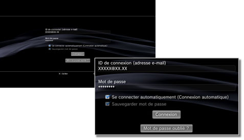

PlayStation®Network > Sauvegarder mot de passe / Se connecter automatiquement
Sauvegarder mot de passe / Se connecter automatiquement
Pour utiliser cette fonctionnalité, vous devrez peut-être mettre à jour le logiciel système.
Si vous sauvegardez votre mot de passe, le champ correspondant sera automatiquement renseigné sur l'écran de connexion. Si vous avez aussi choisi la connexion automatique, le système PS3™ se connectera automatiquement de PlayStation®Network dès sa mise sous tension.
Avis
- L'enregistrement de votre mot de passe peut permettre à d'autres personnes d'utiliser vos services PlayStation®Network ou de consulter d'autres informations relatives à votre compte.
- Avant de confier votre système PS3™ à un centre de service autorisé, n'oubliez pas de désactiver l'option PlayStation®Network [Sauvegarder mot de passe] pour tous les utilisateurs. Cela évitera tout accès non autorisé ou l'utilisation de votre carte bancaire ou d'autres informations personnelles.
- Avant de confier votre système PS3™ à un tiers, pour quelque raison que ce soit y compris son renvoi (lorsque cela est permis), veillez à supprimer toutes les données et à rétablir les paramètres par défaut sur le système PS3™. Cela évitera tout accès non autorisé ou l'utilisation de votre carte bancaire ou d'autres informations personnelles.
1. |
Sélectionnez |
|---|---|
2. |
Entrez votre ID de connexion (adresse e-mail) et votre mot de passe. |
3. |
Sélectionnez les cases à cocher [Sauvegarder mot de passe] et [Se connecter automatiquement (Connexion automatique)].  |
Conseil
Si [Se connecter automatiquement (Connexion automatique)] est activée, l'icône  (Connexion) n'est plus affichée.
(Connexion) n'est plus affichée.
Annulation de l'option de connexion automatique
Sélectionnez  (Gestion du compte) sous
(Gestion du compte) sous  (PlayStation®Network), puis sélectionnez [Connexion automatique désactivée] dans le menu d'options. Lorsque vous mettez votre système PS3™ sous tension, il ne se connecte plus automatiquement.
(PlayStation®Network), puis sélectionnez [Connexion automatique désactivée] dans le menu d'options. Lorsque vous mettez votre système PS3™ sous tension, il ne se connecte plus automatiquement.
Annulation de l'option de sauvegarde du mot passe (effacement du mot de passe)
1. |
Sélectionnez |
|---|---|
2. |
Dans l'écran de saisie de ID de connexion et de votre mot de passe, désactivez la case à cocher [Sauvegarder mot de passe]. |
Conseils
- Si la connexion automatique est activée, l'icône (Connexion) n'est plus affichée. Dans ce cas, vous devez d'abord désactiver le paramètre de connexion automatique.
- Même si le paramètre de connexion automatique est désactivé, vous devez vous connecter automatiquement si vous êtes temporairement déconnecté du réseau auquel vous vous êtes connecté.